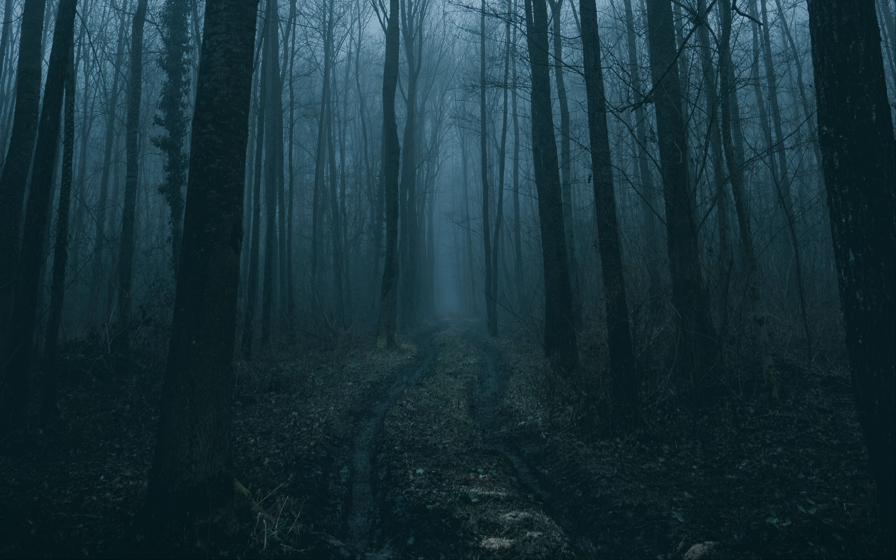

«The Three-Body Problem»
Немного фактов о романе
- Трилогия из трех книг, названием же первой книги, "Задача трёх тел", принято обозначать всю серию
- Роман написан в жанре научной фантастики
- Является ярчайшим представителем китайской научной фантастики, о которой широкой публике до этого не было известно
Завязка сюжета
 Действие романа начинается в КНР, в эпоху разгара Культурной революции. Героиня, женщина-астрофизик Е Вэньцзе, становится свидетелем преследований и убийства отца, вся вина которого заключалась
в защите физики от маоистской идеологии. В это же время китайское правительство запускает сверхсекретный проект «Красный берег», цель которого — поиск внеземных цивилизаций посредством
создания огромного радиотелескопа и отправки в космос радиосигналов. Привлечённой к проекту Е Вэньцзе удаётся, используя Солнце как ретранслятор, отправить в космос послание инопланетянам.
Она получает из космоса ответное послание-предупреждение с просьбой больше никогда не выходить на связь, ради безопасности Земли. Несмотря на это, разочарованная в человечестве Е Вэньцзе
использует «Красный берег», чтобы пригласить инопланетян на Землю.
Действие романа начинается в КНР, в эпоху разгара Культурной революции. Героиня, женщина-астрофизик Е Вэньцзе, становится свидетелем преследований и убийства отца, вся вина которого заключалась
в защите физики от маоистской идеологии. В это же время китайское правительство запускает сверхсекретный проект «Красный берег», цель которого — поиск внеземных цивилизаций посредством
создания огромного радиотелескопа и отправки в космос радиосигналов. Привлечённой к проекту Е Вэньцзе удаётся, используя Солнце как ретранслятор, отправить в космос послание инопланетянам.
Она получает из космоса ответное послание-предупреждение с просьбой больше никогда не выходить на связь, ради безопасности Земли. Несмотря на это, разочарованная в человечестве Е Вэньцзе
использует «Красный берег», чтобы пригласить инопланетян на Землю.
Теория тёмного леса

Согласно теории Темного леса, человечество до сих пор не пересеклось с инопланетными цивилизациями только потому, что они сознательно молчат. Суть в том, что жизнь во вселенной не склонна рисковать.
Прежде всего, инопланетяне думают о выживании своего вида. Они понимают, что наша вселенная – это огромное пространство, которое могут населять развитые цивилизации. Тем не менее,
они считают, что лучше не выходить с ними на связь, ведь среди них могут быть и агрессивные культуры. Именно это, по словам блоггера, объясняет радиотишину, которую человечество воспринимает
за отсутствие внеземной жизни.